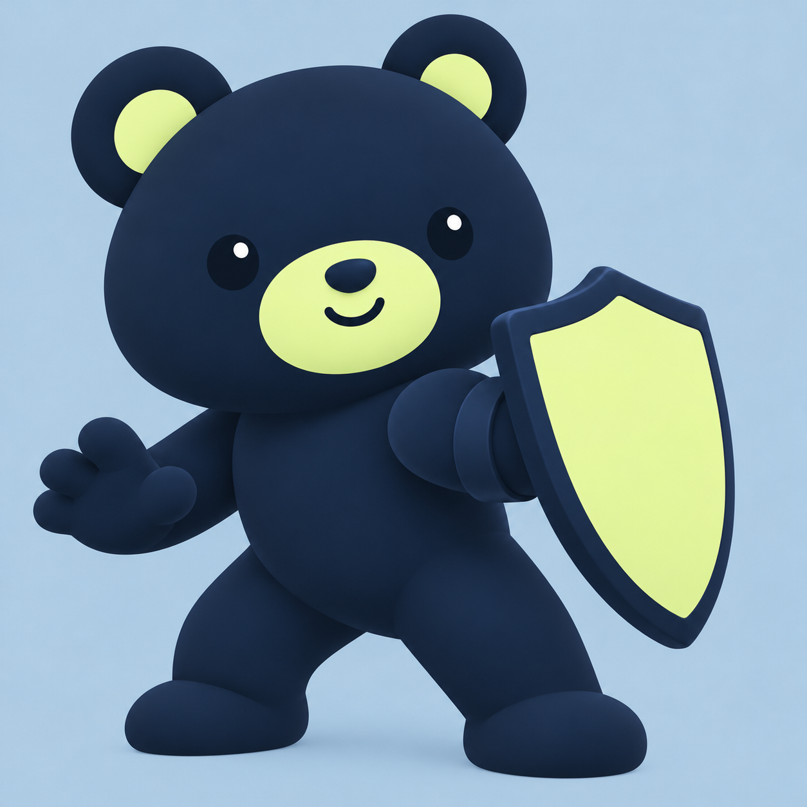
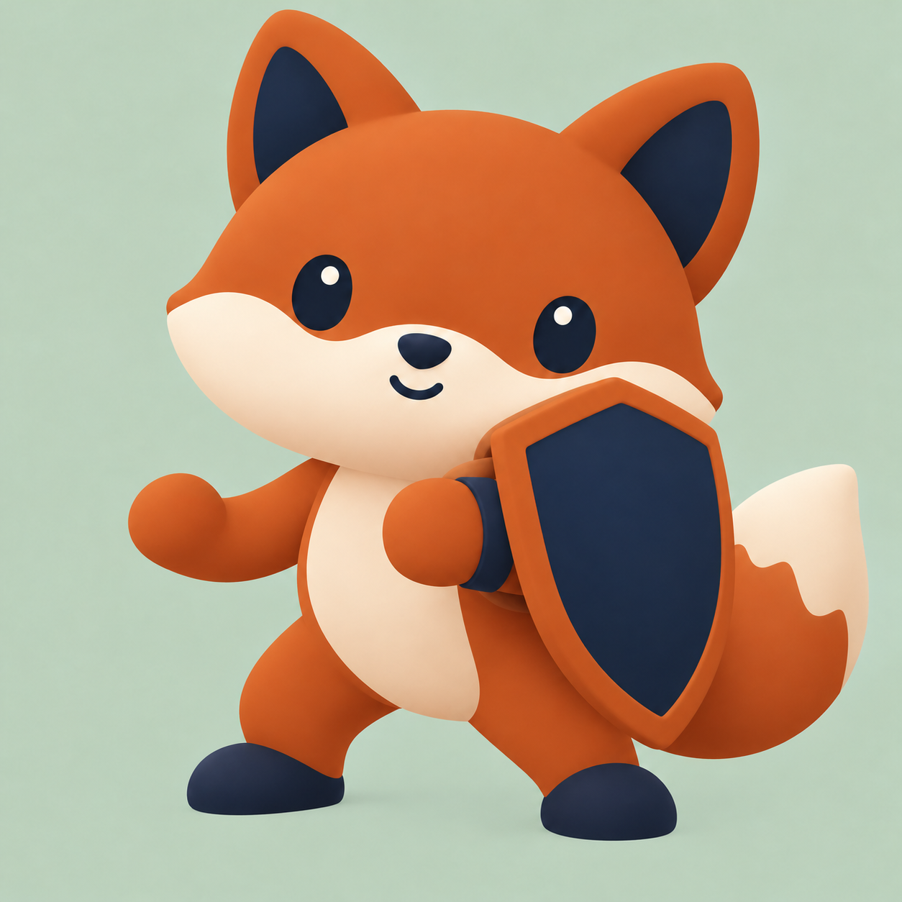
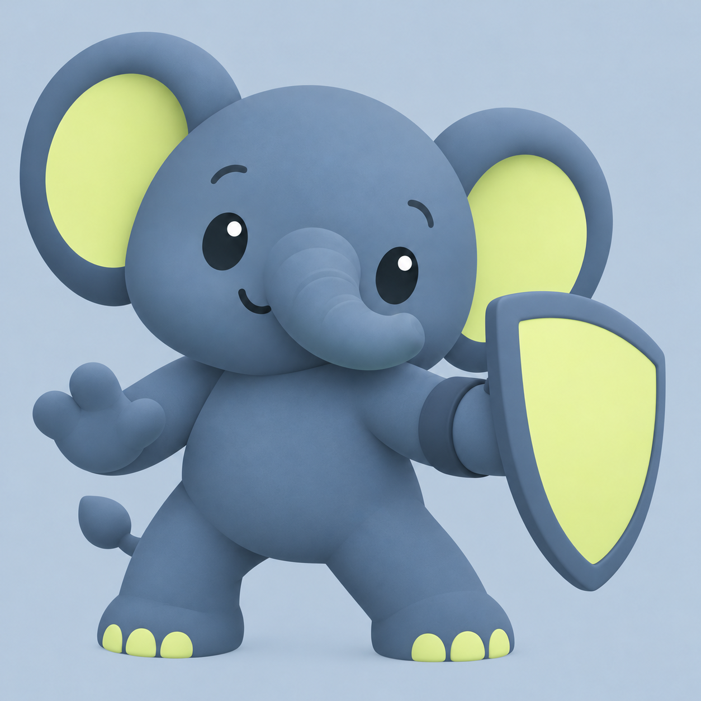
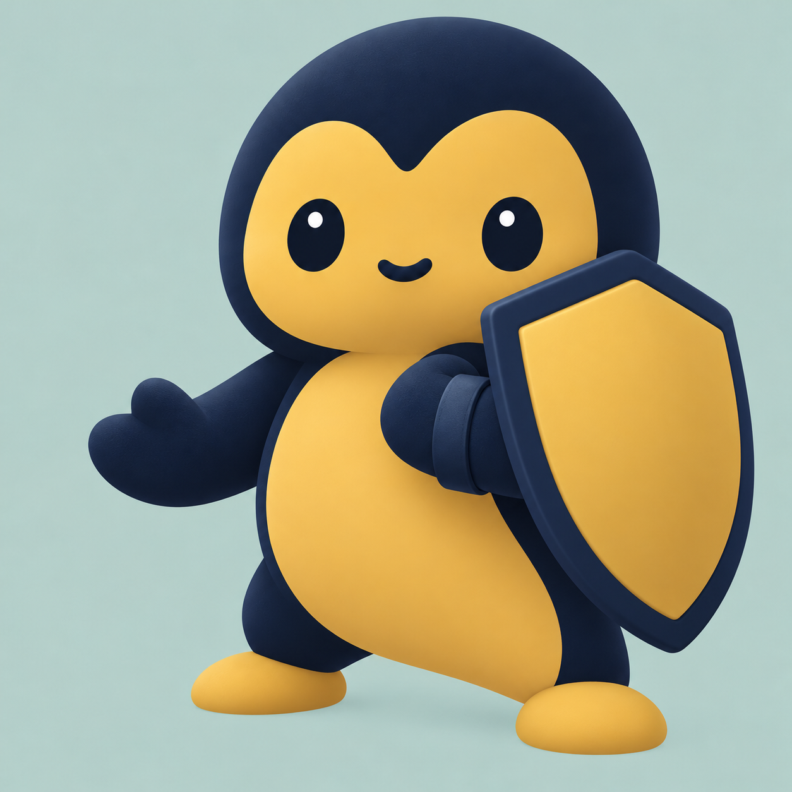
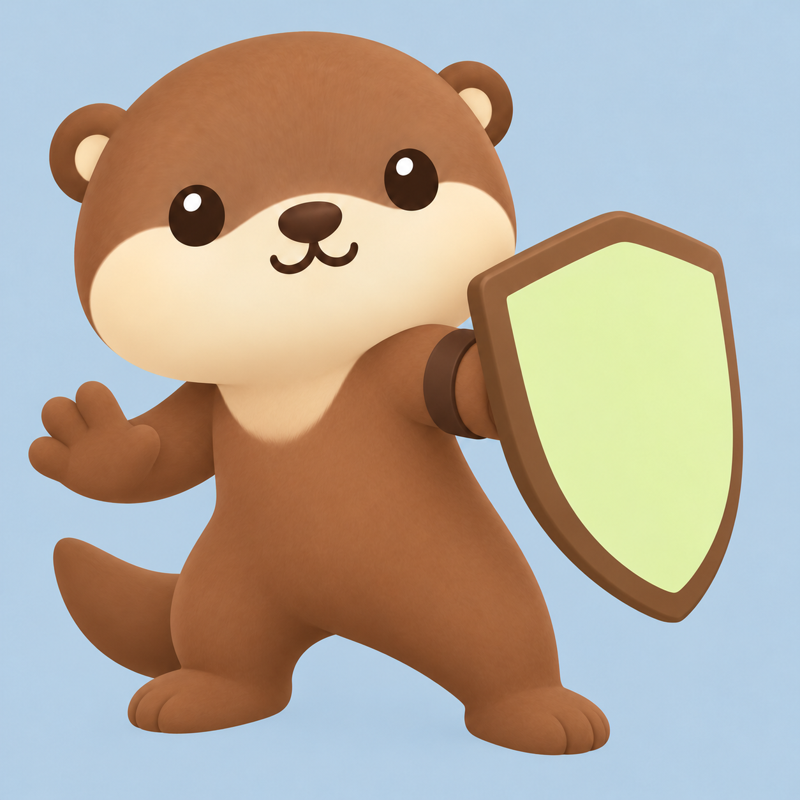
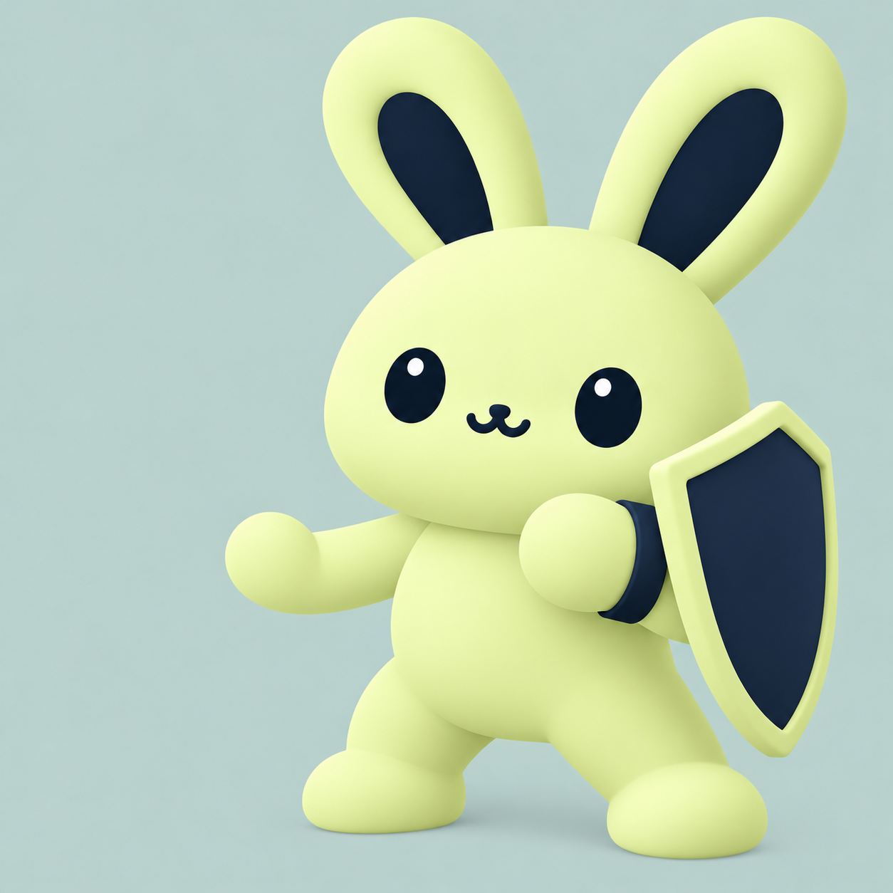
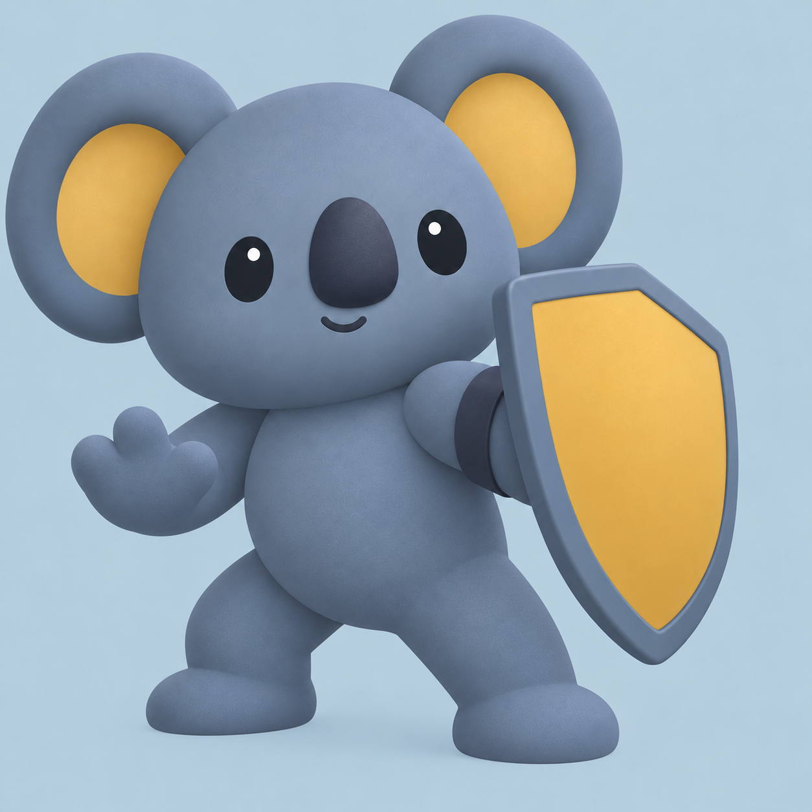
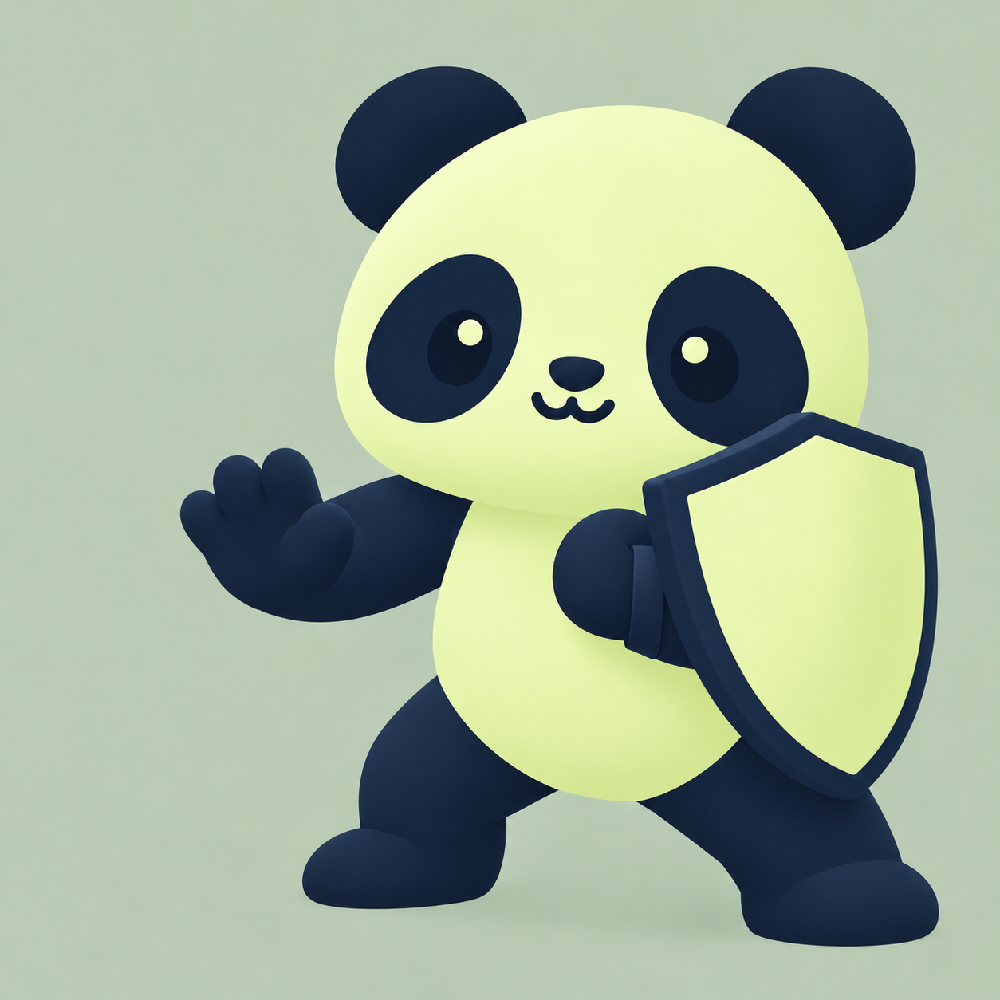
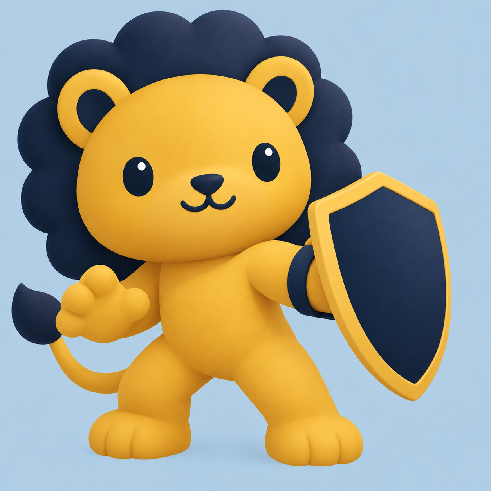
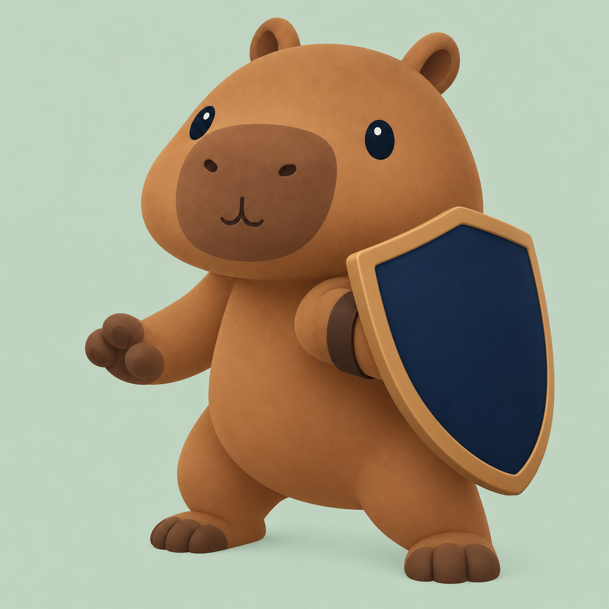

Ten different animals, each with a shield strapped to one forearm in a protective pose, with the other hand free. Click an image for the original. Prompts and colors.

01 · Bear
lower-left · #13233a / #dff0a8 · background #b9cddd

02 · Fox
lower-right · #b85d29 / #13233a · background #c5d4c1

03 · Elephant
lower-left · #526f86 / #dff0a8 · background #c2cedb

04 · Penguin
lower-right · #13233a / #c9a24a · background #bdcfc9

05 · Otter
lower-left · #805b3e / #dff0a8 · background #c3d2df

06 · Rabbit
lower-right · #dff0a8 / #13233a · background #c2d2cd

07 · Koala
lower-left · #63788b / #c9a24a · background #c1d0d9

08 · Panda
lower-right · #13233a / #dff0a8 · background #c4d0bd

09 · Lion
lower-left · #c9a24a / #13233a · background #b9cddd

10 · Capybara
lower-right · #967344 / #13233a · background #c4d4c3